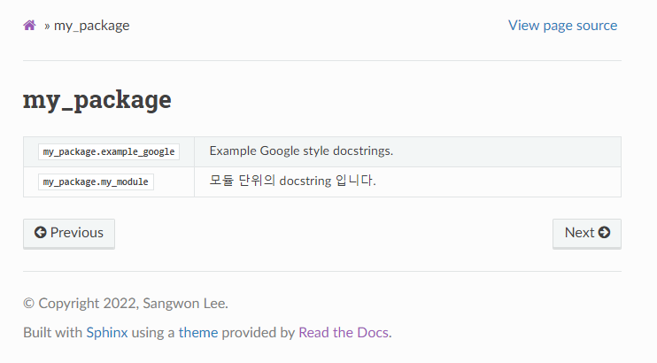

sphinx.ext.autosummary 사용법#
sphinx.ext.autodoc 은 모듈별 분할이 되어있긴 하지만 한 모듈 안에서는 모든
기능들이 한 페이지에 나열되게 됩니다. 모듈이 커질수록 이러한 포멧은 모듈의 파악을
어렵게 만듭니다. 이러한 문제를 해결하기 위한 Sphinx extension이
sphinx.ext.autosummary 입니다.
sphinx.ext.autosummary 사용하여 작성한 문서는 다음과 같은 구조를 가집니다.
메인 페이지:
my_package.example_google 클릭하여 진입 시:
위에 보이는 것과 같이. 모듈별 테이블이 생성되며 해당 테이블에 접근하면 계층적으로
하위 모듈의 페이지가 생성됨을 알 수 있습니다. 해당 페이지는 모듈 설명,
Module attributes, Functions, Classes, Exceptions 로 구성되어
있습니다. 이러한 페이지의 포멧은 커스터마이징도 가능합니다.
Attention
sphinx.ext.autosummary 와 sphinx.ext.autodoc 은 동시에 사용하지
않습니다. 만약 sphinx.ext.autosummary 를 사용한다면 sphinx-apidoc
없이도 필요한 html은 자동으로 생성됩니다.
하지만 sphinx.ext.autodoc extension에 등록해야하긴 합니다.